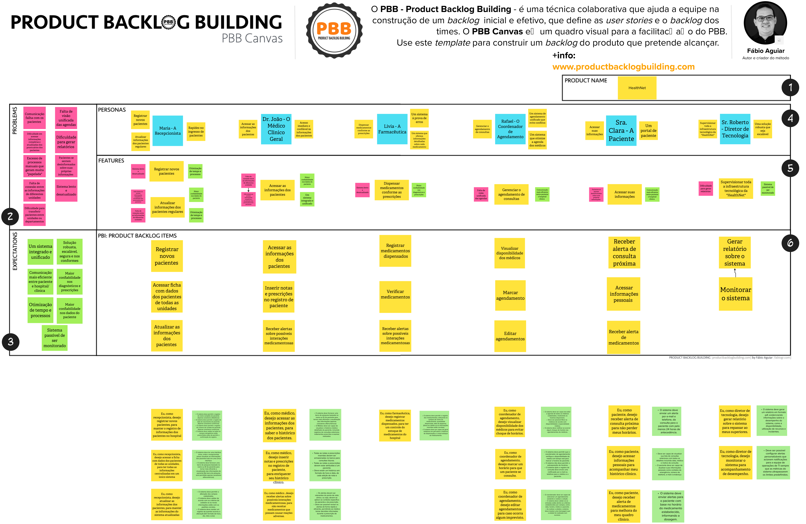
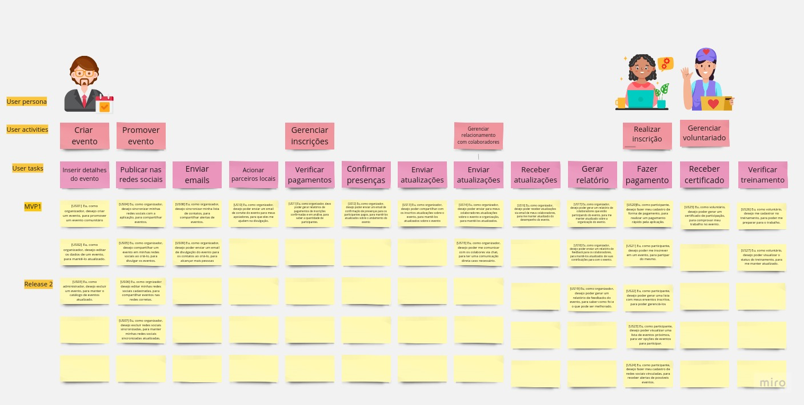
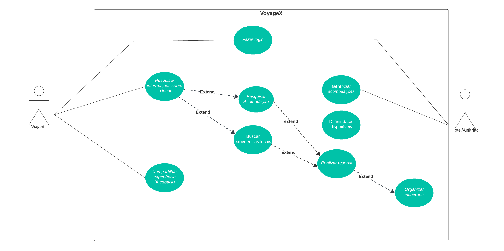

| Data | Versão | Descrição | Autores |
|---|---|---|---|
| 21/11/2023 | 0.1 | Adição das Atividades | Luana Ribeiro |
| 13/12/2023 | 1.1 | Adição atividades unidade 4 | Luana Ribeiro, Gabriel Esteves, Yan Luca |
Exercícios da Equipe
Exercícios realizados pela equipe sobre os temas abordados em aula.
PBB
O Product Backlog Building é um método e um Canvas para a elaboração e a criação de um Product Backlog. O Canvas PBB é a ferramenta que facilita o método de Product Backlog Building. Tem como objetivo ajudar na construção e no refinamento do Product Backlog de forma colaborativa – construindo um entendimento compartilhado e levando todos os envolvidos à compreensão do produto – e na preparação do backlog para o time começar a trabalhar de modo ágil e eficaz. (Marsicano,2023)

USM
O User Story Mapping é uma ferramenta valiosa para o desenvolvimento de software. É uma maneira de trabalhar com histórias de usuários à medida que são usadas em processos Ágeis. É o Backlog do Produto estruturado visualmente. (Marsicano,2023)

Casos de Uso - VoyageX
Um caso de uso é uma descrição textual ou gráfica de uma sequência de ações que um ator realiza para atingir um objetivo específico. Um ator é uma pessoa ou um sistema que interage com o sistema.
Os casos de uso são geralmente organizados em um diagrama de casos de uso, que é uma representação gráfica dos casos de uso e seus relacionamentos.
A metodologia de casos de uso é uma técnica versátil que pode ser usada para projetar sistemas de software de todos os tamanhos e complexidades. Ela é particularmente útil para sistemas que envolvem interações complexas entre usuários e sistemas.
Os principais benefícios da metodologia de casos de uso incluem:
- Ajuda a garantir que os requisitos funcionais do sistema sejam capturados de forma completa e precisa;
- Facilita a comunicação entre os stakeholders do sistema, incluindo usuários, desenvolvedores e gerentes;
- Fornece uma base sólida para o desenvolvimento e teste do sistema.
- A metodologia de casos de uso é uma ferramenta importante para o desenvolvimento de software de sucesso. Ela pode ajudar a garantir que os sistemas sejam projetados de forma a atender às necessidades dos usuários e a serem desenvolvidos e testados de forma eficaz.
Diagrama de Casos de Uso

Escpecificação de Casos de Uso
UC: Pesquisar informações sobre o local
1. Pesquisar informações sobre o local
1.1 Breve Descrição
O caso de uso "Pesquisar Informações sobre o Local" permite que o Viajante busque e obtenha informações detalhadas sobre um destino específico, contribuindo para a tomada de decisões informadas sobre a reserva de acomodações, atividades e experiências personalizadas.
1.2 Atores
Viajante
2. Fluxo Básico de Eventos
2.1 O Viajante acessa a funcionalidade de pesquisa no aplicativo.[FA02]
2.2 sistema exibe uma interface para inserção de parâmetros de pesquisa, como destino, datas, preferências e interesses. [FA01] [RN01]
2.3 O Viajante insere os critérios desejados e inicia a pesquisa.
2.4 O sistema realiza uma busca e apresenta uma lista de destinos correspondentes aos critérios. [RN02]
2.5 O Viajante seleciona um destino específico para obter informações detalhadas.[RN03]
2.6 O sistema exibe informações sobre acomodações disponíveis, atividades locais, recomendações personalizadas e avaliações de outros usuários.
2.7 O caso de uso é encerrado
3. Fluxos Alternativos
3.1 [FA01] Pesquisa Avançada
3.1.1 O Viajante opta por utilizar a pesquisa avançada.
3.1.2 O sistema oferece opções adicionais, como filtrar por preço, comodidades, classificações, etc.
3.1.3 O Viajante ajusta os filtros conforme suas preferências.
3.1.4 O sistema refaz a pesquisa considerando os novos critérios.
3.1.5 O Viajante visualiza os resultados refinados e retorna para o item 2.4.
3.2 [FA02] Recomendações personalizadas
3.2.1 O Viajante recebe recomendações personalizadas antes de iniciar a pesquisa.
3.2.2 O sistema utiliza dados de viagens anteriores e preferências registradas.
3.2.3 O Viajante visualiza destinos, acomodações e atividades recomendadas.
3.2.4 O Viajante seleciona uma recomendação para obter detalhes adicionais e retorna para o item 2.7.
4. Fluxos de Exceção
4.1 [FE01] Pesquisa Avançada
4.1.1 O Viajante opta por utilizar a pesquisa avançada.
5.Pré-Condições
5.1 Autenticação
5.1.1 O viajante precisa estar autenticado no aplicativo
6. Pós-CondiçõesN/D
7. Pontos de Extensão
N/D
8. Requisitos Especiais
N/D
9. Regras de Negócio9.1 RN01 - A pesquisa deve ser realizada com apenas caracteres alfanuméricos, e as datas devem estar no formato “dia/mês/ano”
9.2 RN02 - A lista de resultados deve estar em ordem alfabética
9.3 RN03 - Ao selecionar um destino, deve aparecer uma janela de confirmação, antes de continuar o fluxo.
UC: Compartilhar Experiência (Feedback)
1. Pesquisar informações sobre o local
1.1 Breve Descrição
O caso de uso "Compartilhar Experiência (Feedback)" permite que o Viajante compartilhe suas experiências e avaliações sobre acomodações, atividades e destinos visitados, contribuindo para o sistema de avaliação e feedback do aplicativo.
1.2 Atores
Viajante
2. Fluxo Básico de Eventos
2.1 O caso de uso se inicia quando o viajante acessa a seção de "Minhas Experiências" no aplicativo.
2.2 O viajante seleciona a opção para "Compartilhar Experiência". [FA02] [RN01]
2.3 O viajante escolhe o tipo de experiência a ser compartilhada (acomodação, atividade, destino).[FA01]
2.4 O viajante insere os detalhes da experiência, incluindo avaliação, comentários e fotos, se aplicável. [RN02]
2.5 O viajante confirma a submissão da avaliação.
2.6 O sistema registra a avaliação na plataforma.[RN03]
2.7 O caso de uso é encerrado
3. Fluxos Alternativos
3.1 [FA01] Avaliação interrompida
3.1.1 O Viajante inicia o processo de avaliação, mas interrompe antes de confirmar a submissão..
3.1.2 O sistema salva um rascunho da avaliação para conclusão posterior e retorna para o item 2.7.
3.2 [FA02] Avaliação vinculada a uma reserva
3.2.1 O Viajante compartilha uma experiência vinculada a uma reserva específica.
3.2.2 O sistema utiliza dados de viagens anteriores e preferências registradas.
3.2.3 O Viajante visualiza destinos, acomodações e atividades recomendadas.
3.2.4 O Viajante seleciona uma recomendação para obter detalhes adicionais e retorna para o item 2.7.
4. Fluxos de Exceção
4.1 [FE01] Avaliação Incompleta
4.1.1 Se o Viajante tentar submeter uma avaliação sem preencher todos os campos obrigatórios.
4.1.2 O sistema alerta sobre a necessidade de preencher todos os campos antes da submissão.
4.2 [FE02] Avaliação Duplicada
4.2.1 Se o Viajante tentar submeter uma avaliação para a mesma acomodação, atividade ou destino mais de uma vez.
4.2.2 O sistema alerta sobre a duplicidade e oferece a opção de editar a avaliação existente.
5. Pré-Condições
5.1 Autenticação
5.1.1 O viajante precisa estar autenticado no aplicativo
6. Pós-CondiçõesA avaliação é registrada no sistema e fica disponível para outros usuários visualizarem.
7. Pontos de Extensão
N/D
8. Requisitos Especiais
8.1 Revisar avaliação
8.1.1 Antes da publicação, o Viajante tem a opção de revisar sua avaliação.
9. Informações adicionaisO sistema notifica o Viajante sobre qualquer ação relacionada à sua avaliação, como novos comentários ou moderação.
10. Regras de Negócio10.1 RN01 - Ao selecionar a opção de “compartilhar experiência”, deve-se aparecer um box de confirmação.
10.2 RN02 - O comentário sobre a experiência deve ser limitado a 500 caracteres e as fotos enviadas devem estar em formato .png.
10.3 RN03 - AAo registrar a avaliação na plataforma, deve aparecer uma mensagem de confirmação, informando que a avaliação foi registrada com sucesso.
UC: Gerenciar Acomodações
1. Gerenciar Acomodações
1.1 Breve Descrição
O caso de uso "Gerenciar Acomodações" permite que o Anfitrião do aplicativo gerencie as informações relacionadas às acomodações disponíveis para reserva.
1.2 Atores
Anfitrião
2. Fluxo Básico de Eventos
2.1 O caso de uso se inicia quando o anfitrião acessa o painel de controle das suas acomodações. [FA01][FA02]
2.2 O sistema exibe a lista de acomodações associadas ao Anfitrião. [RN01]
2.3 O Anfitrião seleciona uma acomodação para gerenciar.
2.4 O sistema apresenta as opções de edição para a acomodação escolhida.
2.5 O Anfitrião realiza as alterações desejadas, como atualizar descrição, definir preços, adicionar fotos, etc.[RN02]
2.6 O Anfitrião salva as alterações.
2.7 O sistema confirma a atualização e exibe a confirmação. [RN03]
2.8 O caso de uso é encerrado
3. Fluxos Alternativos
3.1 [FA01] Solicitação de reserva
3.1.1 O Anfitrião recebe uma solicitação de reserva.
3.1.2 O sistema notifica o Anfitrião.
3.1.3 O Anfitrião acessa a solicitação pendente.
3.1.4 O Anfitrião aceita ou rejeita a solicitação.
3.1.5 O sistema atualiza o status da reserva, notifica o usuário e retorna para o item 2.3.
3.2 [FA02] Notificação de avaliação
3.2.1 O Anfitrião recebe uma avaliação de um hóspede.
3.2.2 O sistema notifica o Anfitrião sobre a avaliação.
3.2.3 O Anfitrião visualiza a avaliação e responde, se desejar.
3.2.4 O sistema atualiza a avaliação e exibe as respostas e retorna para o item 2.8.
4. Fluxos de Exceção
4.1 [FE01] Falha na Atualização
4.1.1 O Anfitrião tenta salvar as alterações.
4.1.2 O sistema detecta um erro.
4.1.3 O sistema exibe uma mensagem de erro e sugere correções.
4.2 [FE02] Indisponibilidade do Sistema
4.2.1 O Anfitrião tenta acessar o painel de controle.
4.2.2 O sistema está temporariamente indisponível.
4.2.3 O sistema exibe uma mensagem informando sobre a indisponibilidade.
5. Pré-Condições
5.1 Autenticação
5.1.1 O Anfitrião está autenticado no sistema.
6. Pós-Condições
6.1 Atualização de sistema
6.1.1 As alterações nas acomodações são refletidas no sistema.
7. Pontos de Extensão
7.1 Extensão de Promoção Especial
7.1.1 O Anfitrião pode optar por criar uma promoção especial para sua acomodação durante um período específico.
8. Requisitos Especiais
8.1 Requisito Especial
8.1.1 O sistema deve oferecer suporte multilínguistico para as descrições das acomodações.
9. Regras de Negócio
9.1 RN01 - A lista de acomodações associadas ao anfitrião deve estar em ordem alfabética.
9.2 RN02 - A descrição deve ser de no máximo 240 caracteres e o preço deve estar em apenas caracteres numéricos.
9.3 RN03 - Ao salvar as alterações deve aparecer uma mensagem de confirmação, que as alterações foram realizadas com sucesso.